Traceability technologies and supply chain digitalizationTecnologías de trazabilidad y digitalización de la cadena de suministro
True end-to-end traceability for agriculture and food — from raw materials to the consumer — powered by Ethereum blockchain.
Trazabilidad real de punta a punta para la agricultura y los alimentos — desde la materia prima hasta el consumidor — con tecnología blockchain de Ethereum.
Discover the platformConoce la plataforma Contact usContáctanosFrom inspection systems to smart supply chains
AgroChain initially used its expertise in optics, electronics and computing to design custom manufacturing solutions. Our project began developing advanced inspection systems to verify the quality of agricultural products and packaging, helping the agroindustry comply with serialization regulations through innovative traceability solutions.
Today AgroChain offers true end-to-end traceability, providing granular data at every step of the supply chain. Through serialization and digitization, AgroChain connects all the players in the supply chain and provides unparalleled visibility, giving any company, anywhere, the tools to make real-time decisions based on reliable, actionable data.
Our goal is to build a sustainable world through the Smart Supply Chain (SSC): tracing product origin, ensuring fair trade and sustainable sourcing, optimizing efficiency, reducing waste and increasing customer engagement. AgroChain uses Ethereum blockchain technology to ensure a secure, electronic transmission of data.
De sistemas de inspección a cadenas de suministro inteligentes
AgroChain comenzó usando su experiencia en óptica, electrónica y computación para diseñar soluciones de manufactura a la medida. Nuestro proyecto empezó desarrollando sistemas avanzados de inspección para verificar la calidad de productos agrícolas y empaques, ayudando a la agroindustria a cumplir las normas de serialización con soluciones innovadoras de trazabilidad.
Hoy AgroChain ofrece trazabilidad real de punta a punta, con datos detallados en cada paso de la cadena de suministro. Mediante la serialización y la digitalización, conectamos a todos los actores de la cadena y damos una visibilidad sin precedentes, para que cualquier empresa, en cualquier lugar, tome decisiones en tiempo real basadas en datos confiables.
Nuestra meta es construir un mundo sostenible con la Smart Supply Chain (SSC): rastrear el origen de los productos, asegurar el comercio justo y el abastecimiento sostenible, optimizar la eficiencia, reducir el desperdicio y aumentar la conexión con el consumidor. AgroChain usa blockchain de Ethereum para transmitir los datos de forma segura.
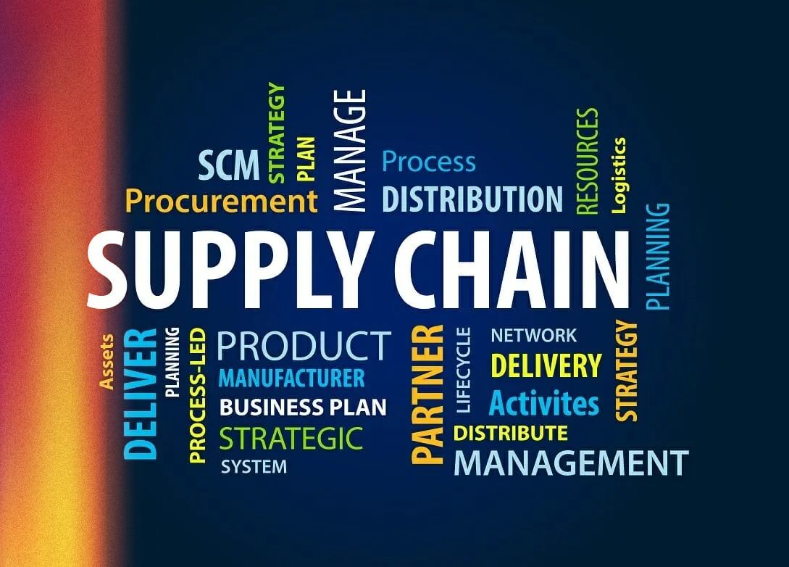
Digital traceability platformPlataforma digital de trazabilidad
Raw materialsMaterias primas
Traceability from farm to manufacturing for:
Trazabilidad desde la finca hasta la manufactura para:
- Increased transparency
- Secure supplies
- Easier outbreak and recall investigation
- Improved sustainable practices
- Agricultural data digitization and analytics
- Real-time visibility and alerts
- Responsible sourcing
- Mayor transparencia
- Suministros seguros
- Investigación más fácil de brotes y retiros
- Mejores prácticas sostenibles
- Digitalización y análisis de datos agrícolas
- Visibilidad y alertas en tiempo real
- Abastecimiento responsable
ManufacturingManufactura
Supply chain traceability and operational intelligence for:
Trazabilidad e inteligencia operativa para:
- Optimized reusable packaging management
- Inventory level and location tracking
- Increased production efficiency
- Product quality inspection
- Reduced environmental impact
- Gestión optimizada de empaques reutilizables
- Seguimiento de niveles y ubicación de inventario
- Mayor eficiencia de producción
- Inspección de calidad del producto
- Menor impacto ambiental
ConsumptionConsumo
Connect with the final consumer or user to:
Conecta con el consumidor final para:
- Prevent fraud and build trust
- Engage with your consumer
- Obtain market insights and analytics
- Ensure freshness and quality produce
- Prevenir fraudes y generar confianza
- Conectar con tu consumidor
- Obtener información y análisis del mercado
- Asegurar frescura y calidad
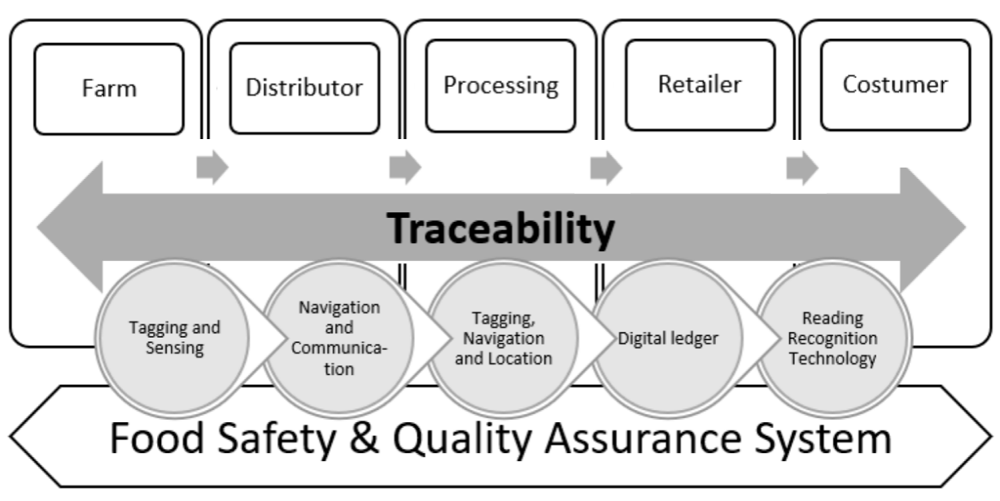
Smart supply chainsCadenas de suministro inteligentes
AgroChain's Smart Supply Chain (SSC) is a powerful traceability platform that digitizes supply chains from end to end. It captures data over the entire product life cycle, providing visibility on operations and transparency from raw materials to consumers and beyond. Our approach offers business programs with approximately 12 key solutions to make supply chains more resilient, agile, efficient and sustainable.
La Smart Supply Chain (SSC) de AgroChain es una potente plataforma de trazabilidad que digitaliza las cadenas de suministro de punta a punta. Captura datos durante todo el ciclo de vida del producto y da visibilidad de las operaciones y transparencia desde la materia prima hasta el consumidor. Ofrecemos programas con unas 12 soluciones clave para cadenas más resilientes, ágiles, eficientes y sostenibles.
Raw materialsMaterias primas
Traceability from source to manufacturing for transparency, sustainability, safety and brand protection.
Trazabilidad desde el origen hasta la manufactura para transparencia, sostenibilidad, seguridad y protección de marca.
ManufacturingManufactura
Regulatory compliance, visibility and operational excellence from manufacturing sites to shipment and warehouses.
Cumplimiento regulatorio, visibilidad y excelencia operativa desde la planta hasta el despacho y los almacenes.
Distribution & warehousesDistribución y almacenes
Connect warehouses and distribution sites to suppliers and buyers for operational excellence, authentication and compliance.
Conecta almacenes y centros de distribución con proveedores y compradores para excelencia operativa, autenticación y cumplimiento.
ConsumptionConsumo
Connect brand owners with the final user for product authentication, engagement, market insights and education.
Conecta a las marcas con el usuario final para autenticación del producto, interacción, información de mercado y educación.
Inventory GeoTrackingGeolocalización de inventario
A company wants to know where its inventory is in real time and exactly when it will arrive in port, for demand planning and supply chain efficiency. AgroChain's Inventory GeoTracking traces specific inventories around the globe in real time, providing complete supply chain visibility, geolocation and inventory levels.
Una empresa quiere saber dónde está su inventario en tiempo real y cuándo llegará exactamente a puerto, para planificar la demanda y mejorar la eficiencia. La solución de geolocalización de AgroChain rastrea inventarios específicos en todo el mundo en tiempo real, con visibilidad completa, geolocalización y niveles de inventario.
How it worksCómo funciona
We digitize, capture and empower traceability data from inventory levels, logistics and movement throughout the supply chain. Each product's history is combined with parent-child aggregation data to improve forecasting and management of expiring products, increase inventory accuracy and decrease costs.
Digitalizamos y capturamos los datos de trazabilidad de inventario, logística y movimientos en toda la cadena. El historial de cada producto se combina con datos de agregación padre-hijo para mejorar los pronósticos y el manejo de productos perecederos, aumentar la exactitud del inventario y reducir costos.
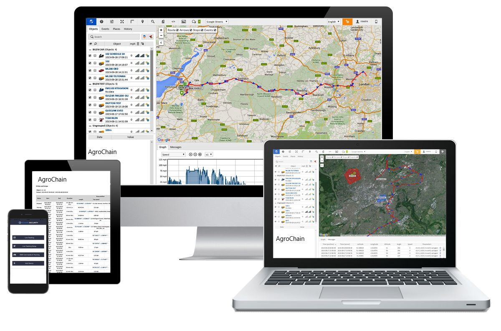
Raw material traceability for improved sustainabilityTrazabilidad de materias primas para una mayor sostenibilidad
Our raw-material traceability solution lets buyers know who the producers are — their socio-economic profile, farming practices and potential human and environmental impact — so they can support producers in improving quality, yield and revenue, trace raw materials back to the field and ensure food security.
Nuestra solución de trazabilidad de materias primas permite saber quiénes son los productores — su perfil socioeconómico, sus prácticas agrícolas y su posible impacto humano y ambiental — para apoyarlos a mejorar la calidad, el rendimiento y sus ingresos, rastrear la materia prima hasta el campo y asegurar la seguridad alimentaria.
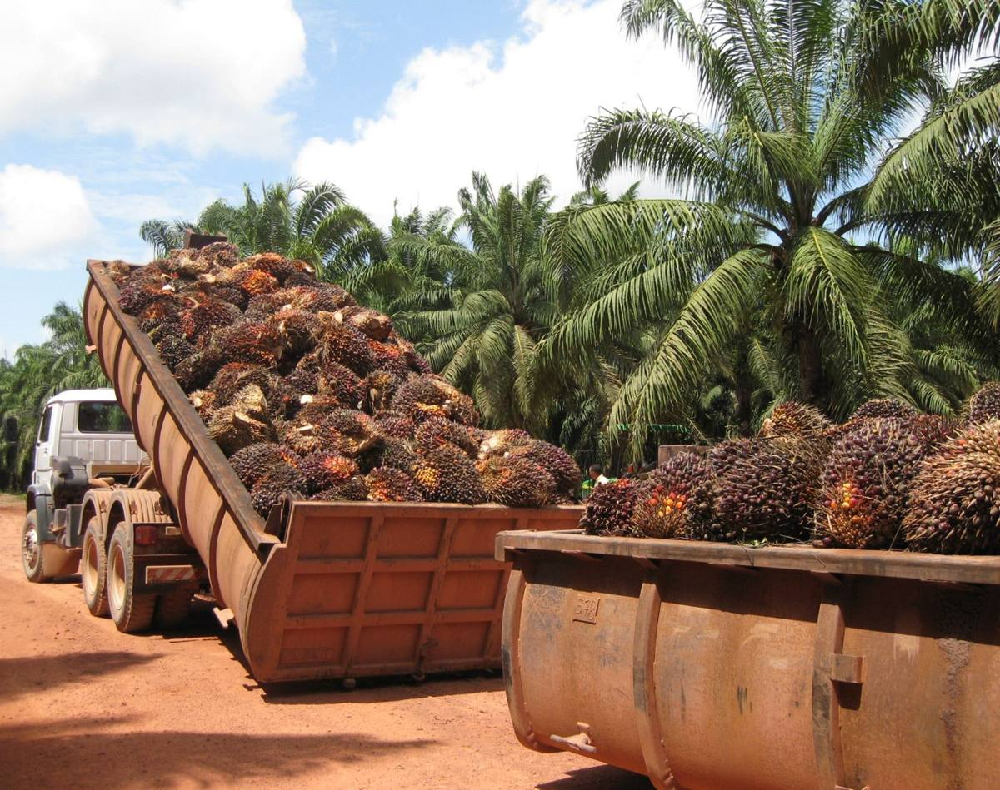
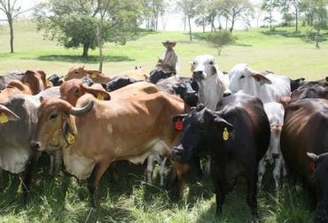
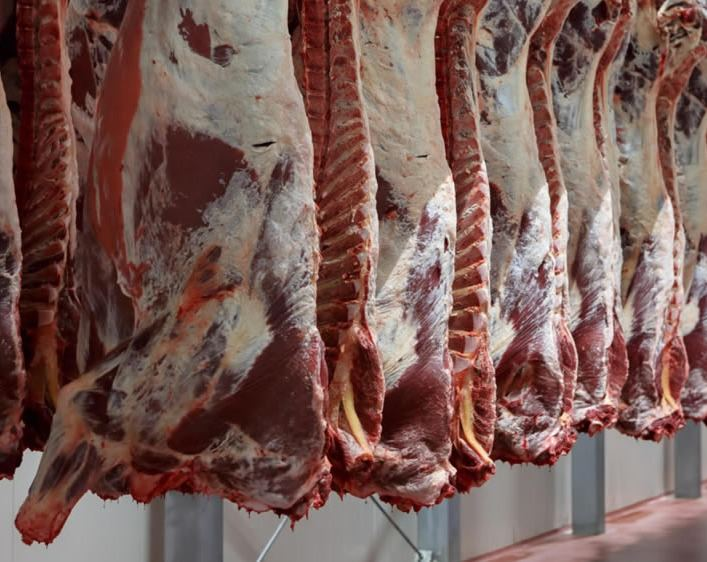
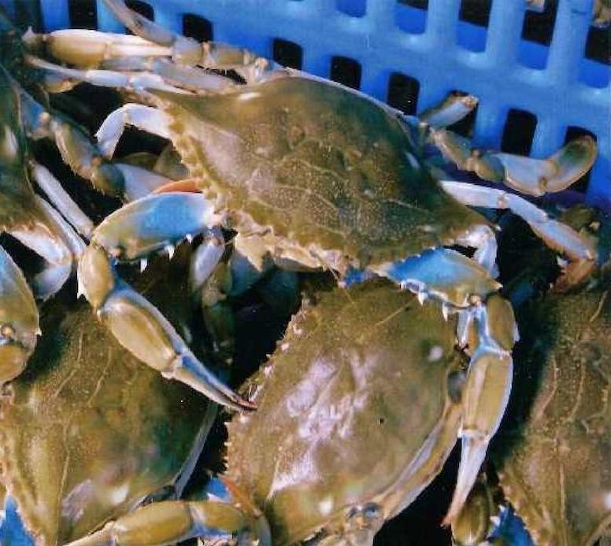
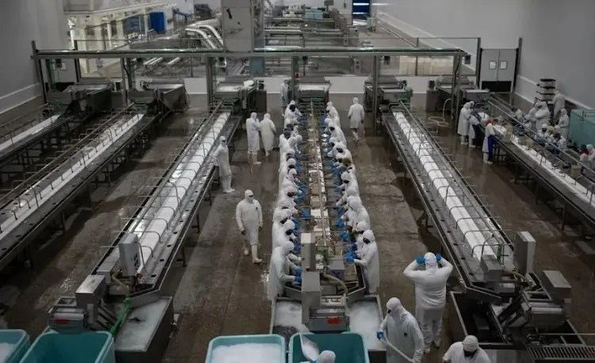
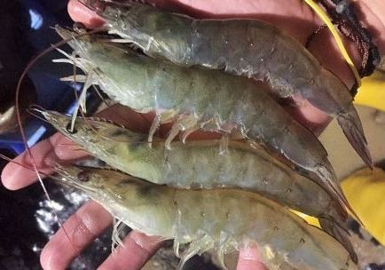
Tomorrow's agriculture starts today.
La agricultura del mañana empieza hoy.
Our missionNuestra misión
To be a socially and environmentally responsible leader that influences and helps citizens, businesses and public institutions globally to build a better world together by leveraging transformative technologies.
Ser un líder social y ambientalmente responsable que inspire y ayude a ciudadanos, empresas e instituciones públicas de todo el mundo a construir juntos un mundo mejor, aprovechando tecnologías transformadoras.
Our valuesNuestros valores
- Social and environmental responsibility
- Agility
- Respect for others and collaboration
- Accountability
- Quality and respect for commitments
- Responsabilidad social y ambiental
- Agilidad
- Respeto por los demás y colaboración
- Rendición de cuentas
- Calidad y cumplimiento de compromisos
With growing global demand and consumers asking for more transparency, companies need solutions that provide true end-to-end supply chain visibility.
Con la creciente demanda global y consumidores que exigen más transparencia, las empresas necesitan soluciones que den visibilidad real de punta a punta en su cadena de suministro.
The SSC platformLa plataforma SSC
AgroChain's Smart Supply Chain (SSC) platform is a set of traceability software and hardware technologies linked together in the cloud. It digitizes supply chains from end to end for complete real-time visibility, built on blockchain — specifically the Ethereum blockchain. It helps businesses, NGOs, governments and consumers increase the visibility, transparency and traceability of their products and make better decisions.
La plataforma Smart Supply Chain (SSC) de AgroChain es un conjunto de tecnologías de trazabilidad en software y hardware conectadas en la nube. Digitaliza la cadena de suministro de punta a punta con visibilidad completa en tiempo real, sobre blockchain de Ethereum. Ayuda a empresas, ONG, gobiernos y consumidores a aumentar la visibilidad, la transparencia y la trazabilidad de sus productos y a tomar mejores decisiones.
It is scalable and modular: a turnkey solution configurable to your needs that connects with your existing systems (ERP, MES, WMS). It is secure and powered by artificial intelligence.
Es escalable y modular: una solución llave en mano que se configura según tus necesidades y se conecta con tus sistemas actuales (ERP, MES, WMS). Es segura y funciona con inteligencia artificial.
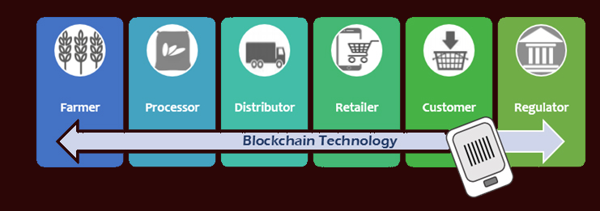
The platform contains 3 layers of technologyLa plataforma tiene 3 capas de tecnología
Hardware and software technologies for data capture along the supply chain.
Tecnologías de hardware y software para capturar datos a lo largo de la cadena.
A cloud-based solution that empowers contextual data with traceability.
Una solución en la nube que potencia los datos con contexto y trazabilidad.
Configurable applications that turn data into value to solve supply chain issues.
Aplicaciones configurables que convierten los datos en valor para resolver problemas de la cadena.
EcosystemsEcosistemas
Supplier ecosystems help supply chain managers overcome the shortcomings of conventional approaches when managing complex supply chains that often span the globe.
Los ecosistemas de proveedores ayudan a superar las limitaciones de los enfoques tradicionales al gestionar cadenas de suministro complejas que muchas veces abarcan todo el mundo.
Agro-analytics
Use the full potential of your agricultural enterprise: the system calculates optimal output per vehicle, fuel consumption and even the plant protection required for every field. No more unexpected costs — you know exactly where your money goes.
Aprovecha al 100 % tu empresa agrícola: el sistema calcula el rendimiento óptimo por vehículo, el consumo de combustible e incluso la protección de cultivos que necesita cada campo. Sin costos inesperados: sabes exactamente a dónde va tu dinero.
Supply chain insightsIdeas sobre la cadena de suministro
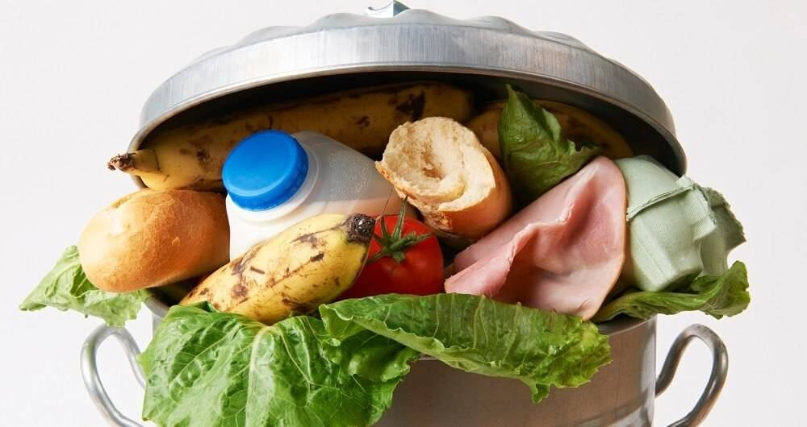
A Digital Food Supply Chain Can Reduce Food Waste
Food waste is a huge problem in the food supply chain, and digital traceability helps reduce it from one end to the other.
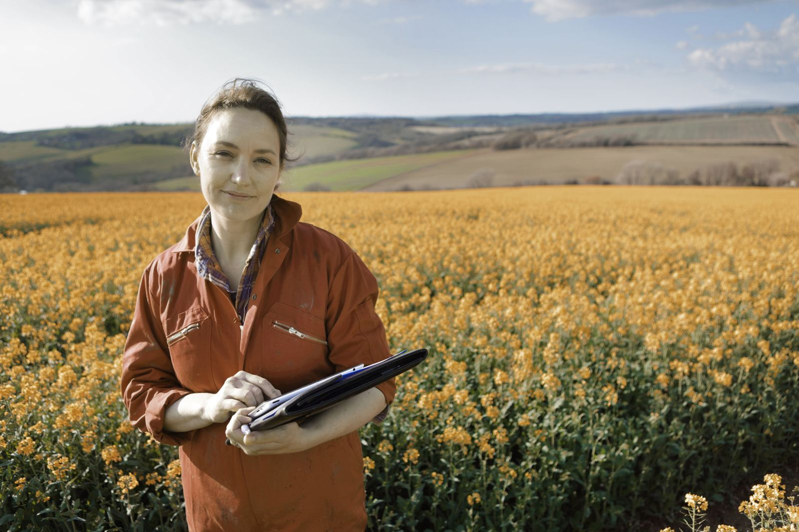
Traceability App for Food Industry
Mobile data capture from virtually any location and the power of a digital supply chain.
How COVID Broke Supply Chains and How Blockchain Could Fix Them
The crisis revealed severe shortages and fragile supply chains — and how blockchain can make them more resilient.
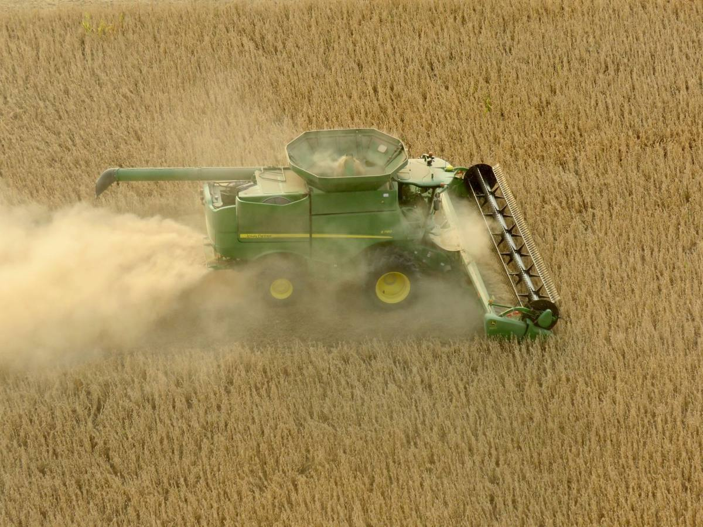
The Effect of Supply Chain Crisis on the Food Industry
The pandemic had deep socio-economic effects on businesses across the world and on food supply chains.
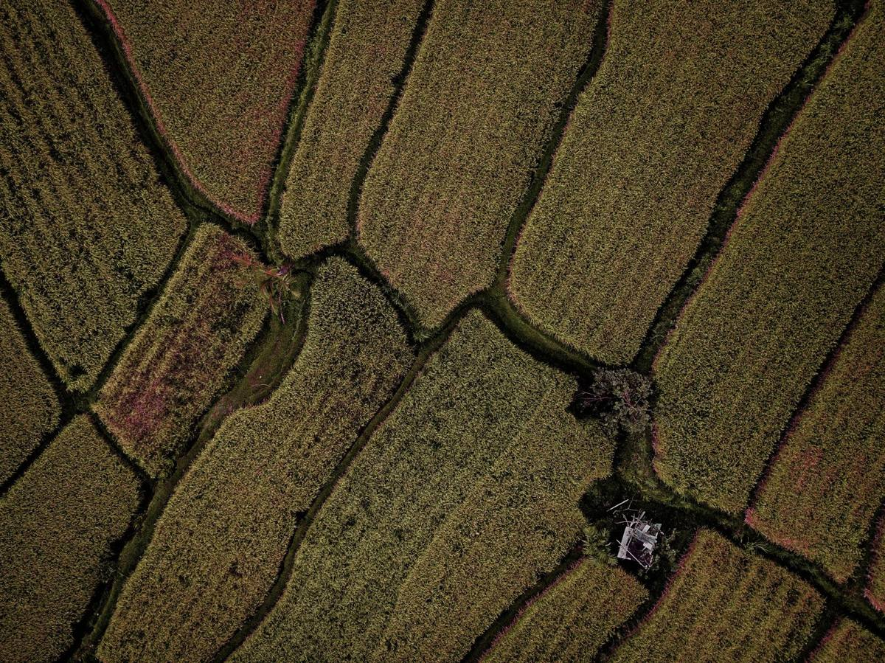
Six Food Industry Supply Chain Challenges
Production scheduling, quality control and increasing calls for transparency are top challenges for food companies.
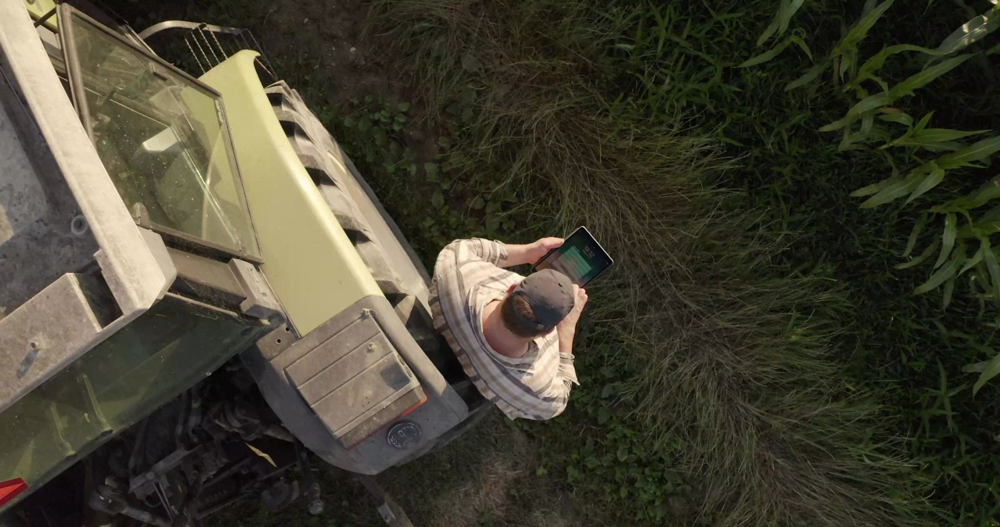
Ready to digitize your supply chain?
¿Listo para digitalizar tu cadena de suministro?
Talk to our team about a traceability program for your operation.
Habla con nuestro equipo sobre un programa de trazabilidad para tu operación.
Partners & technologiesAliados y tecnologías
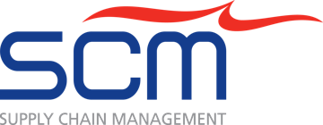
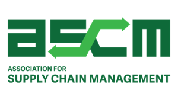
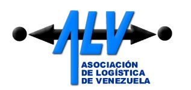
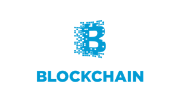
Let's build a smarter supply chainConstruyamos una cadena de suministro más inteligente
Tell us about your operation and we'll show you how traceability can work for you.
Cuéntanos sobre tu operación y te mostramos cómo la trazabilidad puede funcionar para ti.